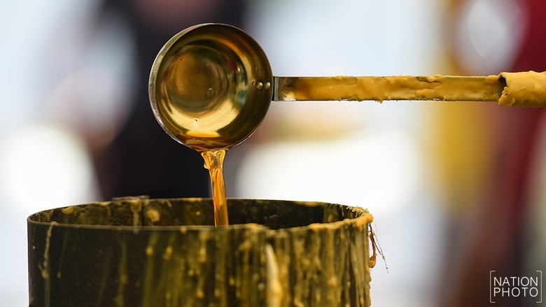
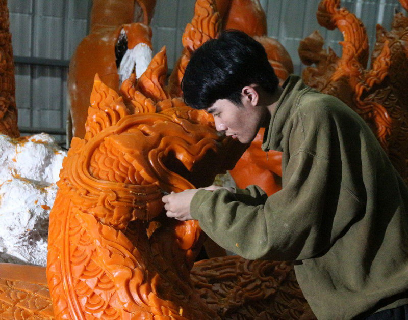

ศาสนาพราหมณ์-ฮินดู นับถือวัวเพราะถือว่า วัวเป็นพาหนะของพระอิศวร เมื่อวัวตาย จะเอาไขจากวัวมาทำเป็นน้ำมันเพื่อจุดบูชาพระผู้เป็นเจ้าที่ตนเคารพ แต่ชาวพุทธซึ่งนับถือศาสนาพุทธจะทำเทียนเพื่อจุดบูชาพระรัตนตรัย โดยการเอารังผึ้ง ร้างมาต้มเอาขี้ผึ้ง แล้วฟั่นเป็นเทียนเล่มเล็ก ๆ มีความยาวตามต้องการ เช่น ยาวเป็นคืบ หรือเป็น ศอกแล้วใช้จุดบูชาพระ
เทียนพรรษา เริ่มมีมาตั้งแต่สมัยพุทธกาล ชาวพุทธจะยึดถือเป็นประเพณีนำเทียนไป ถวายพระภิกษุในเทศกาลเข้าพรรษา เพื่อปรารถนาให้ตนเองเป็นผู้เฉลียวฉลาด มีไหวพริบ ประดุจ แสงสว่างของดวงเทียน
เทียนพรรษา คือ เทียนขนาดใหญ่และยาวเป็นพิเศษกว่าเทียนชนิดอื่น สำหรับจุดในโบสถ์ตั้งแต่วันเข้าพรรษาจนถึงวันออกพรรษา (พจนานุกรม ฉบับราชบัณฑิตยสถาน พ.ศ. 2525) วิวัฒนาการเทียนพรรษาการทำเทียนพรรษา มีวิวัฒนาการมาเป็นลำดับ จากการนำรังผึ้งมาต้มเอาขี้ผึ้งไปฟั่น เป็นเทียนนำไปถวายพระภิกษุ เอาเทียนเล่มเล็ก ๆ หลาย ๆ เล่ม มามัดรวมกันเป็นลำต้นคล้ายกับ ต้นกล้วย หรือลำไม้ไผ่ แล้วนำไปติดกับฐาน ซึ่งการมัดรวมกันแบบนี้เป็นสาเหตุหนึ่งที่นิยมเรียกว่า ต้นเทียน หรือต้นเทียนพรรษา
ต้นเทียนพรรษาประเภทแรก คือ "มัดรวมติดลาย" เป็นการเอาเทียนเล่มเล็ก ๆ มามัด รวมกันบนแกนไม้ไผ่ให้เป็นต้นเทียนขนาดใหญ่ แล้วตัดกระดาษเงิน กระดาษทองเป็นลายต่าง ๆ ติดประดับโดยรอบต้นเทียน ต่อมามีการคิดทำต้นเทียนเป็นต้นเดี่ยว เพื่อใช้จุดให้ได้นาน โดย การใช้ลำไม้ไผ่ที่ทะลุปล้องเป็นแบบหล่อ เมื่อหล่อเทียนเป็นต้นเสร็จแล้วจึงนำมาติดที่ฐาน และจัด ขบวนแห่เทียนไปถวายพระที่วัด
การตกแต่งต้นเทียน เริ่มมีขึ้นโดยภูมิปัญญาชาวบ้าน ใช้ขี้ผึ้งลนไฟหรือตากแดดให้อ่อน แล้วปั้นเป็นรูปดอกลำดวนติดต้นเทียน หรือเอาขี้ผึ้งไปต้มให้ละลาย แล้วใช้ผลมะละกอ หรือ ผล ฟักทองนำมาแกะเป็นลวดลาย ใช้ไม้เสียบนำไปจุ่มในน้ำขี้ผึ้ง แล้วนำไปจุ่มในน้ำเย็น แกะขี้ผึ้งออก จากแบบ ตัดและตกแต่งให้สวยงามนำไปติดที่ต้นเทียน พ.ศ. 2482 มีช่างทองชื่อ นายโพธิ์ ส่งศรี เริ่มทำลายไทยไปประดับบนเทียน โดยมี การทำแบบพิมพ์ลงในแผ่นปูนซีเมนต์ซึ่งถือว่าเป็นแบบพิมพ์ หรือแม่พิมพ์ แล้วเอาขี้ผึ้งที่อ่อนตัว ไปกดลงบนแม่พิมพ์จะได้ขี้ผึ้งเป็นลายไทย นำไปติดกับลำต้นเทียน ต่อมา นายสวน คูณผล ได้คิดทำลายให้นูนและสลับสี จนเห็นได้ชัด เมื่อส่งเทียนเข้า ประกวดจึงได้รับรางวัลชนะเลิศ และในปี พ.ศ. 2497 นายประดับ ก้อนแก้ว คิดประดิษฐ์ทำหุ่นเป็น เรื่องราวพุทธประวัติ และเอาลวดลายขี้ผึ้งติดเข้าไปที่หุ่น ทำให้มีลักษณะแปลกออกไป จึงทำให้ เทียนพรรษาได้รับรางวัลชนะเลิศ และชนะเลิศมาทุกปี ในเทียนพรรษาประเภทติดพิมพ์ ปี พ.ศ. 2502 มีช่างแกะสลักลงในเทียนพรรษาคนแรก คือ นายคำหมา แสงงาม และ คณะกรรมการตัดสินให้ชนะการประกวด ทำให้เกิดการประท้วงคณะกรรมการตัดสิน ทำให้ในปี ต่อๆ มามีการแยกประเภทต้นเทียนออกเป็น 2 ประเภทชัดเจนคือ 1. ประเภทติดพิมพ์ (ตามแบบเดิม) 2. ประเภทแกะสลัก การทำเทียนพรรษามีวิวัฒนาการเรื่อยมาไม่หยุดนิ่ง ในปี พ.ศ. 2511 ผู้คนได้พบเห็น ต้นเทียนพรรษาขนาดใหญ่และสูงขึ้น มีการแกะสลักลวดลายในส่วนลำต้นอย่างวิจิตรพิสดาร ใน ส่วนฐานก็มีการสร้างหุ่นแสดงเรื่องราวทางศาสนา และความเป็นไปในสังคมขณะนั้น กลายเป็น ประติมากรรมเทียนพรรษาที่ยิ่งใหญ่ ซึ่งช่างผู้ริเริ่มในการทำต้นเทียนยุคหลังคือ นายอุตส่าห์ และ นายสมัย จันทรวิจิตร สองพี่น้อง นับเป็นงานสร้างสรรค์ทางศิลปะอันเกิดจากภูมิปัญญาชาวบ้าน อย่างแท้จริง
 